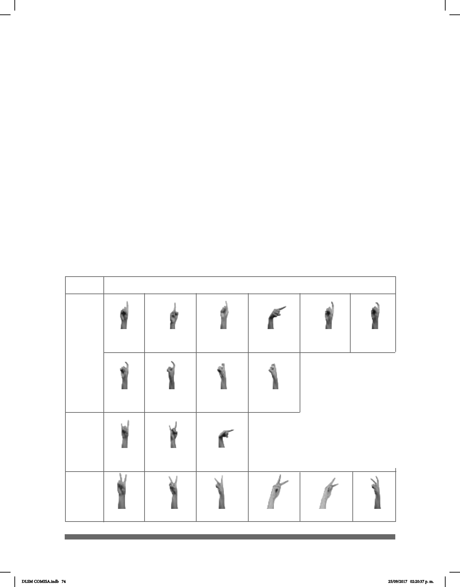

74
Las CM son elementos articulatorios muy difíciles de describir debido a las múltiples
combinaciones que pueden realizarse con las manos; por eso no pueden reducirse a
simples unidades, sino que deben ser entendidas como unidades complejas capaces de
crear signicado al articularse con otros rasgos.
1
1-I
1.1
1.7
1-I.1
1.2
1.8
1-I.2
1.3
1.9
1-I.3
1.4
1.10
1.5 1.6
Tabla de las
Conguraciones Manuales
CONFIGURACIÓN
VARIANTES
En la siguiente tabla se muestran todas las conguraciones manuales existentes en la
LSM. En el lado izquierdo aparecen números y letras que representan las diferentes
formas que adquiere la mano de acuerdo con la conguración. En los apéndices tres y
cuatro se encuentran las señas en LSM correspondientes al abecedario y a los números
y que pueden ser útiles para comprender mejor las imágenes de las páginas posteriores.
Cada conguración tiene una cantidad diferente de variantes, lo cual se representa con
un número después de un punto que sigue al número o a la letra correspondiente a cada
CM. Por ejemplo, la CM 1 tiene diez variantes, la CM 1-I tiene tres, la CM 2, 14, etc. Estas
variantes dependen de la diferente exión de los dedos, de la orientación de la palma de
la mano y, en ocasiones, del movimiento de la muñeca. Con respecto a las CM 1-I e I-L,
se indica que en la misma mano existe una combinación de conguraciones: CM 1 + CM
I y CM I + CM L, respectivamente.
2
2.1 2.2 2.3 2.4 2.5 2.6
DLSM COMISA.indb 74 25/09/2017 02:20:37 p. m.